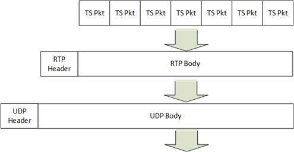
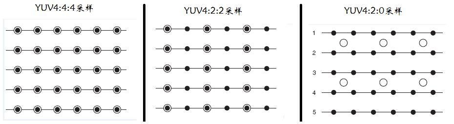
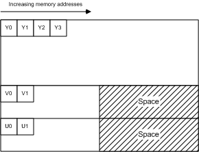
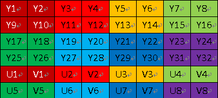

wangrenxing
愿意改变，什么时候开始都不晚！
android搭建sdl2.0使用工程
###一、SDL2.0的android工程搭建
- 配置好as、ndk开发环境
- 下载SDL2.0源码: http://www.libsdl.org/download-2.0.php#source
- 解压后查看docs/README-android.md
- android studio导入sdl2.0源码包中android-project工程，修改gradle与andorid sdk版本
- 新建jni/SDL文件夹，拷贝Android.mk、src、include文件夹到SDL中
- 确保jni/src/Andorid.mk文件中的SDL_PATH := ../SDL
- 进入jni目录，ndk-build all
引入so,app/build.gradle文件android域中添加
sourceSets { main { jni.srcDirs = [] jniLibs.srcDirs = ['libs'] } }注意jni生成的so文件位置，调整libs到上级目录
- jni/src中添加代码，注意同步修改jni/src/Andorid.mk
PCM音频数据处理笔记
一、pcm格式
PCM16LE双声道数据中左声道和右声道的采样值是间隔存储的。每个采样值占用2Byte空间。即：left2byte right2byte left2byte right2byte left2byte right2byte …
“16”: 一个声道的一个采样值占用2Byte。“LE”代表Little Endian，代表2 Byte采样值的存储方式为高位存在高地址中。
PCM8每个采样值占1byte空间。
PCM16LE格式的采样数据的取值范围是-32768到32767，而PCM8格式的采样数据的取值范围是0到255。
PCM16LE -> PCM8：
- 将-32768到32767的16bit有符号数值转换为-128到127的8bit有符号数值: ((signed short)a)>>8;
- 将-128到127的8bit有符号数值转换为0到255的8bit无符号数值:((signed short)a)>>8 + 128;
WAVE格式音频（扩展名为“.wav”）是Windows系统中最常见的一种音频。该格式的实质就是在PCM文件的前面加了一个文件头。
WAVE文件是一种RIFF格式的文件。其基本块名称是“WAVE”，其中包含了两个子块“fmt”和“data”。
WAVE文件 ＝ WAVE_HEADER ＋ WAVE_FMT ＋ WAVE_DATA ＋ PCM采样数据
二、h.264
H.264原始码流（又称为“裸流”）是由一个一个的NALU组成的。
结构：… NALU NALU NALU NALU NALU …
每个NALU之间通过startcode（起始码）进行分隔，起始码分成两种：0x000001（3Byte）或者0x00000001（4Byte）。如果NALU对应的Slice为一帧的开始就用0x00000001，否则就用0x000001。
H.264码流解析的步骤就是首先从码流中搜索0x000001和0x00000001，分离出NALU；然后再分析NALU的各个字段。
三、aac
AAC原始码流（又称为“裸流”）是由一个一个的ADTS frame组成的
结构：… syncword ADTS_frame syncword ADTS_frame …
每个ADTS frame之间通过syncword（同步字）进行分隔。同步字为0xFFF（二进制“111111111111”）。
AAC码流解析的步骤就是首先从码流中搜索0x0FFF，分离出ADTS frame；然后再分析ADTS frame的首部各个字段.
四、flv
FLV封装格式的基本单元Tag，解析Tag首部的字段，可以实现不同的FLV格式数据处理功能。
flv格式：
五、mpeg-ts
MPEG-TS封装格式数据打包为RTP/UDP协议然后发送出去。
7个MPEG-TS Packet打包为一个RTP，然后每个RTP再打包为一个UDP。
RTP包 ＝ RTP Header ＋ MPEG-TS数据
UDP包 ＝ UDP Header ＋ RTP包

YUV格式学习笔记
一、简介
YUV：Y:明亮度/灰度值(Luminance/Luma)；U、V：色度(Chrominance/Chroma),描述影像色彩与饱和度
YUV格式通常有两大类：打包（packed）格式和平面（planar）格式。
packed: 将YUV分量存放在同一个数组中，每个点的Y分量独立保存，但连续几个点的U，V分量是保存在一起，这几个相邻像素组成一个宏像素（macro-pixel）。
planar: 使用三个数组分开存放YUV三个分量
rgb格式每个点的数据连续保存在一起。
YUV根据采样不同而存储不同
注意：黑点表示采样该像素点的Y分量，空心圈表示采用该像素的UV分量

解释：
1. YUV 4:4:4采样，每一个Y对应一组UV分量
2. YUV 4:2:2采样，每两个Y对应一组UV分量
3. YUV 4:2:0采样，每四个Y对应一组UV分量
三、YUV420P格式解析
- YUV420格式是指每个像素都保留一个Y（亮度）分量，而在水平方向上，不是每行都取U和V分量，而是一行只取U分量，则其接着一行就只取V分量，以此重复(即4:2:0, 4:0:2, 4:2:0, 4:0:2 …….)，所以420不是指没有V，而是指一行采样只取U，另一行采样只取V。
- 在取U和V时，每两个Y之间取一个U或V。但从4x4矩阵列来看，每4个矩阵点Y区域中，只有一个U和V，所以它们的比值是4:1。
- 对于一个像素，RGB需要8 * 3 = 24位，即占3个字节；而YUV420P，8 + 8/4 + 8/4 = 12位，即占2个字节，其中8指Y分量，8/4指U和V分量。
四、YUV420内存格式
YUV420sp: YYYYYYYY… UV… UV…
YUV420p: YYYYYYYY… UU… VV…


五、知识点
PSNR是最基本的视频质量评价方法，计算受损图像与原始图像之间的差别，以此来评价受损图像的质量，一般20-50，越大越接近。公式自查。
RGB -> YUV:
Y= 0.299*R+0.587*G+0.114*B
U=-0.147*R-0.289*G+0.463*B
V= 0.615*R-0.515*G-0.100*B
五、代码实现
音视频基础学习笔记
一、基本技术知识
- 封装格式：将视频数据和音频数据打包成一个文件的规范。（如avi/rmvb/mp4/flv/mkv等各式文件采用不同的封装格式）
- 音视频编码标准：H.264/MPEG2/VC-1等（不同封装格式支持的音视频编解码标准数量不同，如mkv多，rmvb少）
- 媒体信息查看开源工具MediaInfo
- 音视频技术：封装技术、视频压缩解码技术、音频压缩解码技术、流媒体协议技术
- 在线视频播放步骤：解协议->解封装->解码音视频->音视频同步->音视频驱动（如：rtmp -> flv -> h.264编码的视频码流 + AAC编码的音频码流）
a. 解协议：流媒体协议数据(RTMP/HTTP/MMS等) -> 封装格式数据
b. 解封装：封装格式数据 -> 分离为音频流压缩编码数据＋视频流压缩编码数据
c. 解码：视频/音频压缩编码数据 -> 非压缩的视频像素数据/音频采样数据
d. 音视频同步：根据解封装获取到的参数信息，同步解码出来的音视频数据，将其送到西系统声卡与显卡视频解码：压缩编码的视频数据 -> 非压缩的颜色数据(YUV420P/RGB等)
二、流媒体协议
客户端与服务端之际通信遵循的规定。
| 名称 | 推出机构 | 传输层协议 | 客户端 | 目前使用领域 |
|---|---|---|---|---|
| RTSP+RTP | IETF | TCP+UDP | VLC,WMP | IPTV |
| RTMP | Adobe Inc. | TCP | Flash | 互联网直播 |
| RTMFP | Adobe Inc. | UDP | Flash | 互联网直播 |
| MMS | Microsoft Inc. | TCP/UDP | WMP | 互联网直播+点播 |
| HTTP | WWW+IETF | TCP | Flash | 互联网点播 |
三、封装格式
主要作用将音频码流与视频码流按照一定格式存储到一个文件中
|名称 |推出机构 | 流媒体 | 支持的视频编码 | 支持的音频编码 | 目前使用领域 |
|:——:|:——-:|:——-:|:———–:|:————:|:————-:|
|AVI |Mic Inc. | 不支持 |几乎所有格式 |几乎所有格式 |BT下载影视 |
|MP4 |MPEG |支持 |MPEG-2, MPEG-4, H.264, H.263等 | AAC, MPEG-1 Layers I, II, III, AC-3等 | 互联网视频网站 |
|TS |MPEG |支持 |MPEG-1, MPEG-2, MPEG-4, H.264 | MPEG-1 Layers I, II, III, AAC, |IPTV，数字电视 |
|FLV |Adobe Inc.| 支持 |Sorenson, VP6, H.264 | MP3, ADPCM, Linear PCM, AAC等 | 互联网视频网站 |
|MKV |CoreCodec Inc.| 支持|几乎所有格式|几乎所有格式 |互联网视频网站 |
|RMVB |Real Networks Inc. | 支持 |RealVideo 8, 9, 10 | AAC, Cook Codec, RealAudio Lossless | BT下载影视 |
四、视频编码
视频编码的主要作用是将视频像素数据（RGB，YUV等）压缩成为视频码流，从而降低视频的数据量
|名称 |推出机构 |推出时间 |目前使用领域 |
|:————:|:————:|:——–:|:———–:|
|H.264 |MPEG/ITU-T |2003 |各个领域 |
|MPEG4 |MPEG |2001 |不温不火 |
|MPEG2 |MPEG |1994 |数字电视 |
|HEVC(H.265) |MPEG/ITU-T |2013 |研发中(厉害哦) |
|VP9 |Google |2013 |研发中 |
|VP8 |Google |2008 |不普及 |
|VC-1 |Microsoft Inc.|2006 |微软平台 |
H.264是编码标准，不适具体编码器。MSU出品的编码器比较
学习H.264最标准的源代码，就是其官方标准JM。
很刁的开源编码器x264.
五、音频编码
音频编码的主要作用是将音频采样数据（PCM等）压缩成为音频码流，从而降低音频的数据量。
|名称 |推出机构 |推出时间 |目前使用领域 |
|AAC |MPEG |1997 |各个领域（新） |
|AC-3 |Dolby Inc. |1992 |电影 |
|MP3 |MPEG |1993 |各个领域（旧） |
|WMA |Microsoft Inc. |1999 |微软平台 |
直播服务普遍采用了RTMP作为流媒体协议，FLV作为封装格式，H.264作为视频编码格式，AAC作为音频编码格式。
点播服务普遍采用了HTTP作为流媒体协议，H.264作为视频编码格式，AAC作为音频编码格式。
六、笔记摘自雷神博客
react-native 平台、兼容、适配笔记
一、不同平台加载相同组件的不同代码
React Native会进行检测文件是否有.ios或者.android的扩展名，然后根据当前客户端运行的平台进行加载对应的文件。
import BigButton from './components/BigButton'; // 文件命名 BigButton.ios.js BigButton.android.js运行时平台判断通过平台模块：var { Platform } = React;
二、ios链接
通过rnmp管理工具
npm install -g rnpm npm install <library-with-native-dependencies> --save --save 或 --save-dev: rnpm会在package.json文件中的dependencies和devDependencies中写入该链接库信息 // 添加链接到原声依赖 rnpm link
手动链接
通过npm学习react-native版本管理
一、npm(node package manager)
// 查看npm有哪些参数
# npm
Usage: npm <command>
where <command> is one of:
access, adduser, bin, bugs, c, cache, completion, config,
ddp, dedupe, deprecate, dist-tag, docs, edit, explore, get,
help, help-search, i, init, install, install-test, it, link,
list, ln, logout, ls, outdated, owner, pack, ping, prefix,
prune, publish, rb, rebuild, repo, restart, root, run,
run-script, s, se, search, set, shrinkwrap, star, stars,
start, stop, t, tag, team, test, tst, un, uninstall,
unpublish, unstar, up, update, v, version, view, whoami
npm <cmd> -h quick help on <cmd>
npm -l display full usage info
npm help <term> search for help on <term>
npm help npm involved overview
Specify configs in the ini-formatted file:
/Users/wangrenxing/.npmrc
or on the command line via: npm <command> --key value
Config info can be viewed via: npm help config
npm@3.10.3 /Users/wangrenxing/.nvm/versions/node/v6.3.0/lib/node_modules/npm
// npm install 安装学习
# npm install --help
npm install (with no args, in package dir)
npm install [<@scope>/]<pkg>
npm install [<@scope>/]<pkg>@<tag>
npm install [<@scope>/]<pkg>@<version>
npm install [<@scope>/]<pkg>@<version range>
npm install <folder>
npm install <tarball file>
npm install <tarball url>
npm install <git:// url>
npm install <github username>/<github project>
aliases: i, isntall
common options: [--save|--save-dev|--save-optional] [--save-exact]
node包安装：
本地安装：package会被下载到当前所在目录，也只能在当前目录下使用。
npm install pkg
npm install pkg@version
全局安装：package会被下载到到特定的系统目录下，安装的package能够在所有目录下使用。使用－g参数。
＃ npm install -g react-native-cli
如果node包有很多依赖，可以通过package.json配置，再执行npm install命令。
# node包卸载
npm uninstall [<@scope>/]<pkg>[@<version>]... [--save|--save-dev|--save-optional]
# node包更新
# react-native --version
# npm update -g react-native-cli
# npm info react-native
// 修改项目根目录package.json里面react-native的版本号，执行npm install即可变更版本
// 更新 react-native项目的模版文件
# react-native upgrade
react入门笔记
一、环境搭建
- webpack：前端资源加载/打包工具
npm install -g webpack - 编译 JSX，先安装对应的 loader:
npm install babel-loader –save-dev webpack配置文件：webpack.config.js
当前工程目录有一个入口文件 entry.js，React 组件放置在一个 components/ 目录下，组件被 entry.js 引用，要使用 entry.js，我们把这个文件指定输出到 dist/bundle.js，Webpack 配置如下：var path = require('path'); module.exports = { entry: './entry.js', output: { path: path.join(__dirname, '/dist'), filename: 'bundle.js' }, resolve: { //指定可以被 import 的文件后缀 extensions: ['', '.js', '.jsx'] }, module: { loaders: [ //指定 babel-loader 编译后缀名为 .js 或者 .jsx 的文件 { test: /\.js|jsx$/, loaders: ['babel'] } ] } }- 监听编译: webpack -d –watch
二、基础知识
1. JSX
- jsx（可选）: 把 HTML 模板直接嵌入到 JS 代码里面，使用时通过工具转换为js代码。
- jsx约定：小写的字符串是 HTML 标签，大写开头的变量是 React 组件
- js与html关键字冲突：HTML: class －> JSX: className，HTML: for -> JSX: htmlFor
- jsx使用注释与js的唯一区别：在组件的子元素里需使用｛｝挎起来：{/ child comment, put {} around /}
属性扩散 … ，可被覆盖，如下面props.foo
var props = {}; props.foo = x; props.bar = y; var component = <Component {...props} foo='blala' />;
2. 组件：
react应用构建在组件之上，核心：props、sate。
一个组件就是通过这两个属性的值在 render 方法里面生成这个组件对应的 HTML 结构。
注意：组件生成的 HTML 结构只能有一个单一的根节点。
- props: 组件属性，由外部通过jsx属性传入设置，this.props一般不修改。
- state：组件当前状态，ui根据状态作出展示。state值变化，组件自动调用render重新渲染，更改动作由this.setState方法触发。
state判断标准：
a. 是否是从父级通过 props 传入的？如果是，可能不是 state 。
b. 是否会随着时间改变？如果不是，可能不是 state 。
c. 能根据组件中其它 state 数据或者 props 计算出来吗？如果是，就不是 state 。
d. 深入理解react
2.1 组件生命周期
一般来说，一个组件类由 extends Component 创建，并且提供一个 render 方法以及其他可选的生命周期函数、组件相关的事件或方法来定义。
import React, { Component } from 'react'; import { render } from 'react-dom'; class LikeButton extends Component { constructor(props) { super(props); this.state = { liked: false }; } handleClick(e) { this.setState({ liked: !this.state.liked }); } render() { const text = this.state.liked ? 'like' : 'haven\'t liked'; return ( <p onClick={this.handleClick.bind(this)}> You {text} this. Click to toggle. </p> ); } } render(<LikeButton />, document.body);getInitialState方法，组件加载时调用一次，es6可在构造函数中初始化
getDefaultProps方法，只在组件创建时调用一次并缓存返回的对象（即在 React.createClass 之后就会调用）。默认值。es6可直接定义：
Counter.defaultProps = { initialCount: 0 };- render方法，组装html结构，可返回null或false或html结构，仅能单根节点
componentWillMount、componentDidMount、componentWillUnmount
componentWillReceiveProps shouldComponentUpdate componentWillUpdate componentDidUpdate
2.2 事件处理
注意要显式调用 bind(this) 将事件函数上下文绑定要组件实例上
import React, { Component } from 'react'; import { render } from 'react-dom'; class LikeButton extends Component { constructor(props) { super(props); this.state = { liked: false }; } handleClick(e) { this.setState({ liked: !this.state.liked }); } render() { const text = this.state.liked ? 'like' : 'haven\'t liked'; return ( <p onClick={this.handleClick.bind(this)}> You {text} this. Click to toggle. </p> ); } } render(<LikeButton />, document.body);- “合成事件”和“原生事件”
a. “合成事件”会以事件委托（event delegation）的方式绑定到组件最上层，并且在组件卸载（unmount）的时候自动销毁绑定的事件。
b. 使用原生事件的时候注意在 componentWillUnmount 解除绑定 removeEventListener。
c. ”合成事件“ 的 event 对象只在当前 event loop 有效
2.3 DOM 操作
ReactDOM.render 返回对组件的引用也就是组件实例（对于无状态状态组件来说返回 null），注意 JSX 返回的不是组件实例，它只是一个 ReactElement 对象。
// A ReactElement const myComponent = <MyComponent /> // render const myComponentInstance = ReactDOM.render(myComponent, mountNode); myComponentInstance.doSomething();findDOMNode()，不能用于无状态组件上。
import { findDOMNode } from 'react-dom'; // Inside Component class componentDidMound() { const el = findDOMNode(this); }Refs，通过在要引用的 DOM 元素上面设置一个 ref 属性指定一个name，然后通过 this.refs.name 来访问对应的 DOM 元素。
class App extends Component { constructor() { return { userInput: '' }; } handleChange(e) { this.setState({ userInput: e.target.value }); } clearAndFocusInput() { this.setState({ userInput: '' }, () => { this.refs.theInput.focus(); }); } render() { return ( <div> <div onClick={this.clearAndFocusInput.bind(this)}> Click to Focus and Reset </div> <input ref="theInput" value={this.state.userInput} onChange={this.handleChange.bind(this)} /> </div> ); } } 如果 ref 是设置在原生 HTML 元素上，它拿到的就是 DOM 元素，如果设置在自定义组件上，它拿到的就是组件实例，这时候就需要通过 findDOMNode 来拿到组件的 DOM 元素。 因为无状态组件没有实例，所以 ref 不能设置在无状态组件上。因为无状态组件没有实例方法，不需要 ref 去拿实例调用相关的方法，但是如果想要拿无状态组件的 DOM 元素的时候，就需要用一个状态组件封装一层，然后通过 ref 和 findDOMNode 去获取。- 注意
a. 可用 ref 到的组件定义的任何公共方法，比如 this.refs.myTypeahead.reset()
b. Refs 是访问到组件内部 DOM 节点唯一可靠的方法
c. Refs 会自动销毁对子组件的引用（当子组件删除时）
d. 不要在 render 或者 render 之前访问 refs
e. 不要滥用 refs，比如只是用它来按照传统的方式操作界面 UI：找到 DOM -> 更新 DOM
react试水
- 安装npm
- npm install -g react-heatpack
vim index.js
import React from ‘react’
export default React.createClass({
render: function() {return <div>Hello React!</div>}
})- heatpack index.js
浏览器打开localhost:3000
代码
import React from 'react' var Hello = React.createClass({ render: function() { return <span> Hello </span> } }) /* version 1*/ /* var World = React.createClass({ render: function(){ return <span> World! </span> } })
export default React.createClass( {
render: function() {
return <div><Hello/><World/></div>
}
})
*/
/* version 0 */
/*
export default React.createClass( {
render: function() {
return <div> Hello React! </div>
}
})
*/
/* version 3 */
/*
var World = React.createClass({
render: function(){
return <span>{this.props.who || ' react world!'}!</span>
}
})
var World_1 = React.createClass({
render: function(){
return <span>{this.props.who ? this.props.who : ' react world!'}!</span>
}
})
var World_2 = React.createClass({
getPerson: function(){
return this.props.who || ' react world!';
},
render: function(){
return <span>{this.getPerson()}!</span>
}
})
export default React.createClass({
render: function(){
return <div><Hello/><World_2 who="wrx"/></div>
}
})
*/
var Good = React.createClass({
propTypes: {
name: React.PropTypes.string.isRequired,
age: React.PropTypes.number, // optional
//parent: React.PropTypes.object.isRequired
},
render: function(){
return <span>{this.props.name}! {this.props.age}!</span>
}
})
export default React.createClass({
render: function(){
return <div><Good name='wrx' age={28}/></div>
}
})